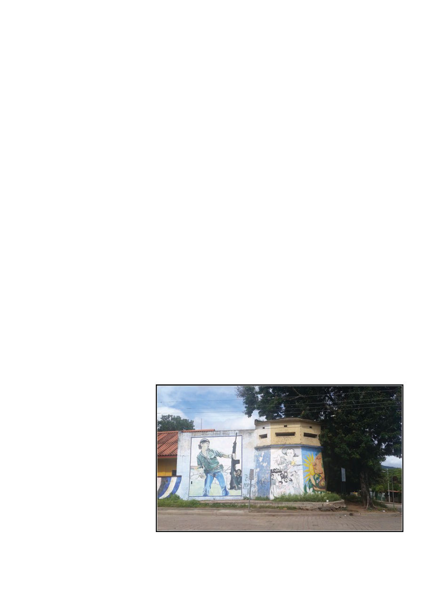

American Bee Journal
1036
leadership, and some activities not re-
lated to beekeeping at all. In 2018 for
example, Sweet Progress delivered 27
classes per month, reaching a total of
344 women, 83 teenage girls, and 143
teenage boys.
As of this writing (March 2019),
Sweet Progress, working with the
American Nicaragua Foundation
and Professor Van Veen, has started
construction on an FDA registered
honey processing plant expected to
triple the annual earnings of the co-
ops. He anticipates within five years
the co-ops will be producing 3,800
tons of organic honey per year, infus-
ing $9,500,000 into local communities.
They are also finalizing the export of
54 tons of raw honey, which he notes,
“marks the first time a charity organi-
zation has connected a honey project
to the global market in the Western
Hemisphere.” I am impressed, export
is always a goal to strive for in under-
developed communities. Merely sell-
ing honey to neighbors doesn’t actu-
ally bring wealth into the community,
but exporting does.
I first came into contact with Vin-
cent in 2014, when I was answering
the phone for the Orange County
(California) Beekeeping Association,
and he called asking if we would be
interested in organizing a team of vol-
unteers to come down. I was quickly
able to assemble a “dream team” of
five experienced beekeepers enthusi-
astic to go. Sadly, international events
intervened and the planned trip dis-
solved amid clouds of tear gas and the
clatter of stones against riot shields
— the Nicaraguan government had
nationalized a vast swath of land as
part of an ill-conceived China-funded
scheme to build their own “Panama
Canal” across the country. The result:
thousands of farmers kicked off their
land, marching the streets, clashing
with government forces. This was
2015 and 2016. Cows now graze in the
recovering scar where the canal was
barely begun. In 2017 I finally found
myself in Nicaragua … for reasons
entirely unrelated to Sweet Progress.
I was able to spend my first day in
the country with Vincent and Dr. Van
Veen though. On this occasion Dr. Van
Veen was giving a presentation at the
National Agricultural College near
Tipitapa. As other students herded
cattle past outside, some thirty stu-
dents sat in a classroom while Dr. Van
Veen made a PowerPoint presenta-
tion about beekeeping. It was almost
unbearably hot, the numerous ceiling
mounted fans only granting a little
relief if one was directly below one.
The beekeeping presentation seemed
very interesting, with a lot of specific
information about different types of
flora in the area, and I wished I could
understand it, but it was of course in
Spanish. After the general beekeep-
ing presentation, by popular demand
he made a presentation about na-
tive stingless bees, which I was even
more regretful I couldn’t understand
because I find stingless bees fascinat-
ing. Stingless bees are kept in artificial
hives in Nicaragua, as I would see lat-
er, and their honey harvested.
After the presentations, we had to
hurry to make the airport, and got
mired in traffic. Eventually, desper-
ate, we followed other cars into a
side street and navigated the laby-
rinthine city sprawl, sometimes hav-
ing to go around pigs sleeping in the
street, or reverse around corners with
barely centimeters to spare on either
side after coming to an impassable
chokepoint in the narrow streets. Mi-
raculously we made it to the airport
in time for Dr. Van Veen to catch his
flight.
My presence in Nicaragua felt
uniquely peculiar in some ways. So
close to home and yet so far: I lived
thirty years of my life two hours from
the Mexican border in California, and
yet to make this first visit of mine to
Mesoamerica I traveled two thirds of
the way backwards around the world,
from Kyrgyzstan (see June American
Bee Journal) to Australia, where I now
reside, only to immediately depart for
Nicaragua. It would have been less
than half the distance to simply travel
west from Kyrgyzstan but the whole
thing had become entangled in bu-
reaucratic complexities between two
organizations and changing plans.
Partners for the Americas is a U.S.
based non-profit NGO founded in
1964, dedicated to development and
aid in the Americas. Among other
things, they administer USAID fund-
ed Farmer-to-Farmer programs. After
a day off to “adjust” during which I
had joined Vincent and Dr. Van Veen,
I was off to the north of the country!
It was a four-hour drive from Ma-
nagua. Halfway, we stopped for lunch
in the town of Esteli, where a wall
covered with a mural depicting the
civil war (1978-1990) was also pock-
marked with bullet-holes from that
same war. An air raid siren began its
banshee wail and I quickly scanned
the horizon, thinking one of the nu-
merous smoldering volcanoes had fi-
nally erupted, but no one around me
seemed phased.
“They just do that to mark noon,”
my driver said after it ended and
conversation could resume. Then the
bells of the nearby cathedral began to
toll. “They do that too,” he added. I
rather preferred the bells.
To get to where the project would be
based, we continued up into forested
mountains in which pink-tiled adobes
peeked out from among the trees, un-
til we came to the town of Somoto. It
had quiet cobbled streets with more
pedestrians than cars, in which shop-
keepers and residents often could be
found sitting on their streetside steps
in the evening.
The local host organization was
Fabretto — named after Padre Fab-
retto, a much beloved priest who had
worked tirelessly and selflessly to im-
prove conditions for the children and
Municipal building overlooking Somoto’s central square, built as a functional
fortification